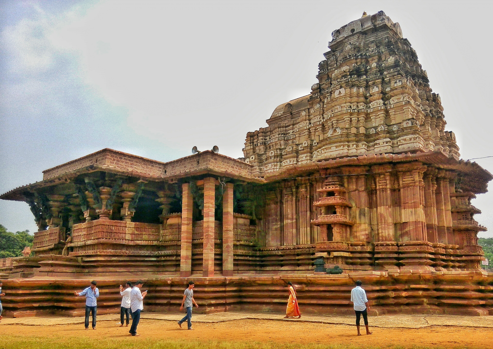

Charminar, Hyderabad
The Charminar (lit. 'four minarets') is a monument located in Hyderabad, Telangana, India. Constructed in 1591, the landmark is a symbol of Hyderabad and officially incorporated in the emblem of Telangana.[3] The Charminar's long history includes the existence of a mosque on its top floor for more than 425 years. While both historically and religiously significant, it is also known for its popular and busy local markets surrounding the structure, and has become one of the most frequented tourist attractions in Hyderabad. Charminar is also a site of numerous festival celebrations, such as Eid-ul-adha and Eid al-Fitr,[4] as it is adjacent to the city's main mosque, the Makkah Masjid. The Charminar is situated on the east bank of Musi River.[5] To the west lies the Laad Bazaar, and to the southwest the richly ornamented Makkah Masjid.[6] It is listed as an archaeological and architectural treasure on the official list of monuments prepared by the Archaeological Survey of India.[7] The English name is a translation and combination of the Urdu words chār and minar, translating to "Four Pillars"; the towers are ornate minarets attached and supported by four grand arches.

For more Information click on the link: Charminar
Golconda Fort
Around 11 km from Hyderabad, the impressive 16th century Golconda Fort is one of the most famous forts in India. The capital of the erstwhile Golconda kingdom, the fort was the centre of the Golconda stronghold in the region and was thus built as an impregnable structure. Its former glory and majesty can still be seen in the mighty ramparts and fortifications encircling it. Situated on a 120-m-high hill, it enjoyed a prominent vantage point from where a lookout for the enemy could be kept. Today, its high-rising position gives tourists sweeping views of the surrounding areas, where one can see almost as far as the horizon. Climbing further up, one can spot the stunning Deccan plateau and also get a bird's eye view of the bustling and lit-up city.Touring the fort, one can sample the rich flavour of its history, which saw the throne change hands among various dynasties. While the several beautiful palaces housed here echo the royal grandeur of times gone by, the famous Fateh Rahben gun, reminds one of the brutal onslaught that the fort experienced when Mughal emperor Aurangzeb laid seize to it. In the evening, a unique light and sound show takes one back in time when Golconda was full of life and splendour.The Golconda Fort was originally built as a mud fort, with the Yadavas of Deogiri and the Kakatiya dynasty of Warangal ruling over it. Moreover, the fort was a citadel until Mughal emperor Aurangzeb conquered it in 1687.The fort is a marvellous work of engineering of that time and perhaps that is why so many mighty emperors sought to occupy it. Its massive gates have been studded with iron spikes to stop elephants from breaking them down and inside, a futuristic concealed water pipeline ensured uninterrupted water supply during sieges. The most spectacular, however, is the ingenious acoustics of the fort that ensured that even the slightest sound from the entry gates would echo across the complex. It also has four drawbridges, eight gateways, halls, and stables. The outermost area houses the Fateh Darwaza (victory gate), which is called so because Aurangzeb’s victorious army marched successfully through it.

For more Information click on the link: Golconda Fort
Ramappa Temple
It's probably the only temple in the country to be known by the name of its sculptor. The medieval Deccan Ramappa Temple which dates back to 1213 AD, was built by the patronage of the Kakatiya ruler Kakati Ganapathi Deva under the authority of his Chief Commander Rudra Samani at the place known as Ranakude in the Atukuru province. The Ramappa temple is the right destination for people who admire architectural brilliance and have a panoramic view of true scenic beauty. The temple is situated in Palampet village of the Venkatapur Mandal, in Mulug Taluq of Warangal. The Ramappa temple has been referred as the brightest star in the network of medieval temples in the Deccan region. You can reach the temple via a royal garden, which is now reduced to a lawn with a path paved by trees. Another striking feature of this temple is that it is built with bricks that are so light that they can easily float on water. The temple which is situated in a valley took nearly 40 years to be completed. Elaborate carvings line the walls and also cover the pillars and ceilings of the temple. The Ramappa temple finds its hold on a 6 feet high platform on a cruciform plan. The temple's chamber is crowned with a shikharam and is surrounded by pradakshinapatha. At the entrance of the temple, we can find a Nandi mandapam. An imposing Nandi vigraham stands on it.
For more Information click on the link: RamappaTemple